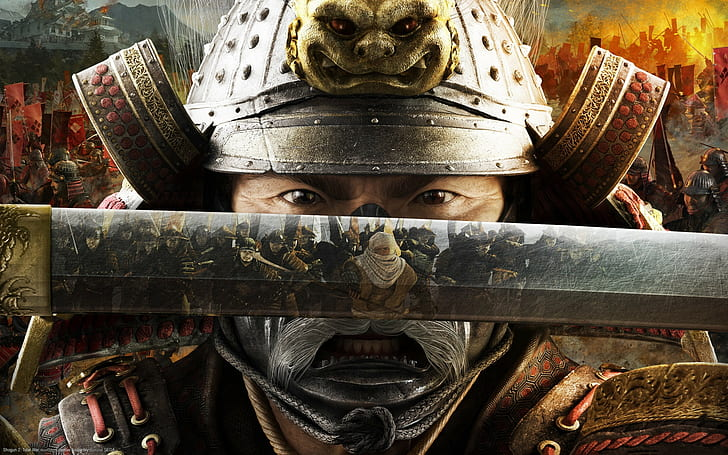

La ética Samurai:
Los samuráis seguían un estricto código de normas morales: el bushido (camino del guerrero), que enfatizaba la lealtad, el coraje y la autodisciplina. El Samurai jugó un papel importante en la historia de Japón, sirviendo como guerreros en la batalla y asesores de los shogunes que gobernaron el país. Incluso hoy en día, muchas personas admiran a los samuráis por su compromiso inquebrantable con la justicia y su dedicación para proteger a los más débiles que ellos.
